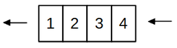
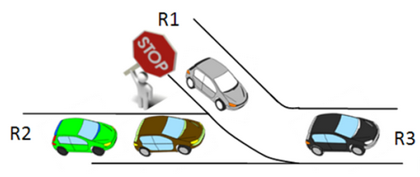

II. Les files¶
Cours¶
A. Définition¶
Définition
Une file est une structure de données basée sur le principe « premier entré, premier sorti » (en anglais "First In, First Out" (FIFO)), c’est-à-dire que les premiers éléments ajoutés à la file seront les premiers à être enlevés.

Exemples de la vie quotidienne
- pour représenter le système de queue dans un magasin,
- pour représenter le flux de véhicules sur une route,
- pour stocker des dossiers en attente dans une entreprise,...
Exemples en informatique
- pour la gestion du temps affecté à chaque tâche par un système d'exploitation,
- pour la gestion de la file d'attente de documents à imprimer,
- pour matérialiser une file d'attente d'un logiciel de visioconférence, d'un jeu en ligne,...
B. Type abstrait¶
Les opérations primitives que l'on peut faire sur une file sont les suivantes :
- construire une file vide (fileCree()),
- ajouter un élément à la file (il se retrouve après les autres) (fileAjouterFin(file, element)),
- enlever un élément de la file (le premier ajouté : celui en tête) et le renvoie (fileRetirerTete(file)),
- estimer si la file est vide (True) ou non (False) (fileEstVide(file)),
- obtenir le nombre d'éléments contenus dans la file (fileTaille(file)),
- obtenir la tête de la file, aussi appelé sommet (sans la retirer) (fileTete(file)).
Exercice :
En utilisant les noms des fonctions donnés ci-dessus, créer une file, lui ajouter les éléments 2 et 9, puis lui enlever le dernier élément récupéré dans une variable, avant d'estimer si elle est vide.
Solution
f = fileCree()
f = enfiler(f, 2)
f = enfiler(f, 9)
x = enfiler(f)
print(fileVide(f))
C. Les structures linéaires de données¶
Les listes, piles et files sont des structures linéaires de données : c'est-à-dire que les différents éléments sont ordonnés et adjacents les uns aux autres.
Les piles et les files contrastent par leur ordre d'accès aux données est opposé : LIFO vs FIFO.
TP : Implémentations¶
Dans ce TD, nous allons implémenter la structure de file, de plusieurs manières différentes.
A. Une première implémentation¶
Une première implémentation est donnée ci-dessous. A partir de ce code, créer une file et enfiler successivement les entiers de 0 à 4.
def file():
''' Renvoie une file vide '''
return []
def vide(f):
''' Renvoie True si la file est vide, False sinon '''
return f == []
def enfiler(f,x):
''' Ajoute x à la file f '''
return f.append(x)
def defiler(f):
''' Enlève et renvoie le premier élément de la file '''
assert not vide(f), "file vide !"
return f.pop(0)
Créer les fonctions suivantes :
- taille : renvoie la taille d'une file f,
- sommet : renvoie le sommet d'une file f, sans l'enlever de la file.
Les tester sur la file f créée précédemment.
B. Implémentation avec deux piles¶
Pour la deuxième implantation, nous allons utiliser deux structures de piles et la programmation orientée objet.
Le procédé est le suivant :
-
La file est, au départ, composée de deux piles vides : une pile d'entrée et une pile de sortie.
-
Quand on ajoute un élément dans la file, on le place dans la pile d'entrée.
-
Quand on supprime un élément de la file, deux cas se présentent :
- Si la pile de sortie est vide : on dépile alors chaque élément de la pile d'entrée pour les empiler dans la pile de sortie.
- S'il y a au moins un élément dans la pile de sortie : on ne fait rien.
Dans les deux cas, on supprime ensuite le sommet de la pile de sortie.
On utilise donc une classe Pile, et on propose la code de la classe File ci-dessous.
-
Compléter les méthodes proposées pour implémenter la structure de file.
-
Ajouter à la classe
Fileles méthodes suivantes :sommet: retourne le sommet de la file, sans l'en enlever.taille: retourne le nombre d'éléments de la file.
class Pile:
''' Définition d'une classe Pile
une instance Pile est créée avec une liste Python '''
def __init__(self):
"Création d'une pile vide"
self.L = []
def vide(self):
"Teste si la pile est vide"
return self.L == []
def depiler(self):
"Dépile : enlève le dernier élément"
assert( not(self.vide()) ), "Pile vide !"
return self.L.pop()
def empiler(self,x):
"Empile : ajoute un élément x en haut de la pile"
self.L.append(x)
def taille(self):
"Retourne la taille (le nombre d'éléments) de la pile"
return len(self.L)
def sommet(self):
"Retourne le premier élément à sortir de la pile sans le dépiler"
return self.L[self.taille()-1]
class File:
def __init__(self):
''' Crée une file vide.
Attribut pile_entree : objet Pile stockant les nouvelles valeurs ajoutées à la file.
Attribut pile_sortie : objet Pile stockant les valeurs qui vont sortir de la file. Son sommet est le premier élément de la file.
'''
self.pile_entree = Pile()
self.pile_sortie = Pile()
def vide(self):
''' Teste si la file est vide ou non. '''
return ???
def enfiler(self, x):
''' Ajoute l'élément x à la file.'''
self.pile_entree.empiler(x)
def organiser(self):
''' Fonction auxiliaire actualisant l'état de la pile de sortie lorsque l'on veut supprimer un élément de la file.
Si la pile de sortie est vide, on lui ajoute successivement les éléments que l'on dépile à la pile d'entrée. '''
if self.pile_sortie.vide():
???
def defiler(self):
''' Supprime le premier élément entré dans la file. '''
self.organiser()
???
Tester le bon fonctionnement du code suivant :
f = File()
for i in range(5):
f.enfiler(2*i)
print(f.taille())
a = f.defiler()
print(a)
print(f.taille())
print(f.sommet())
C. Implémentation avec une liste Python¶
En vous inspirant de l'implémentation d'une pile en POO que nous avions faite, proposer une implémentation similaire pour une structure de file : en utilisant une liste Python. On devra retrouver les mêmes primitives que pour les autres implémentations. Faire un test en créant un nouvel objet de la classe File, et en lui appliquant les différentes méthodes.
class File:
# à compléter
D. L'implémentation Python¶
Python possède sa propre implémentation de file, utilisable aussi pour modéliser une pile. Il s'agit de la structure deque ("double-ended queue").
Utiliser sa documentation : https://docs.python.org/fr/3/library/collections.html#collections.deque pour choisir les méthodes qui permettent de simuler le fonctionnement d'une file. On y retrouve des méthodes similaires à celles définies pour les listes Python, mais avec la possibilité d'ajouter et de supprimer des éléments soit à droite, soit à gauche.
Rajouter, à la suite du code ci-dessous, des instructions qui permettent de créer un objet deque, de lui enfiler plusieurs éléments, d'estimer si la file est vide, et de défiler un élément. Il y a plusieurs solutions.
from collections import deque
TD : Modélisation¶
A. Présentation¶
On souhaite écrire un algorithme qui simule l'arrivée de voitures sur la route R3, modélisée par la file f3.
- Dans la file f1, on représente la présence d’une voiture par le nombre 1 et l’absence de voiture par 0.
- Dans la file f2, on représentera la présence d’une voiture par le nombre 2 et l’absence de voiture par 0.

Donner la file f1 correspondant à la situation suivante : une voiture, pas de voiture, pas de voiture, une voiture, une voiture, pas de voiture.
Donner la file f2 correspondant à la situation suivante : pas de voiture, pas de voiture, une voiture, une voiture, pas de voiture, une voiture.
B. Les différents cas¶
Que doit faire l’algorithme si :
- les deux sommets des files sont à 0 ?
- le sommet de f1 est à 1 et celui de f2 à 2 ?
- le sommet de f1 est à 1 et celui de f2 à 0 ?
- le sommet de f1 est à 0 et celui de f2 à 2 ?
- l’une des deux files est vide ?
Donner la file f3 correspondant aux files entrantes suivantes :
f1 : tête <– [0, 1, 1, 0, 1] <– queue
f2 : tête <– [0, 2, 2, 2, 0, 2, 0] <– queue
C. Construction de l’algorithme¶
Ecrire sous la forme d’un pseudo-code la fonction croisement prenant en entrées les deux files f1 et f2, et retournant la file f3. Tous les cas identifiés dans la partie précédente devront être traités. On n’utilisera que les primitives utilisables sur les files.
D. Implémentation de l’algorithme¶
Implémenter le pseudo-code précédent et le tester sur l’exemple donné dans la partie 2. On utilisera une implémentation de file avec la POO, utilisant les méthodes enfiler, defiler, sommet et estVide.